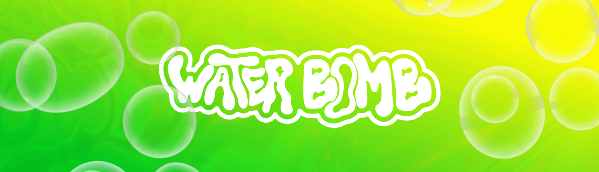
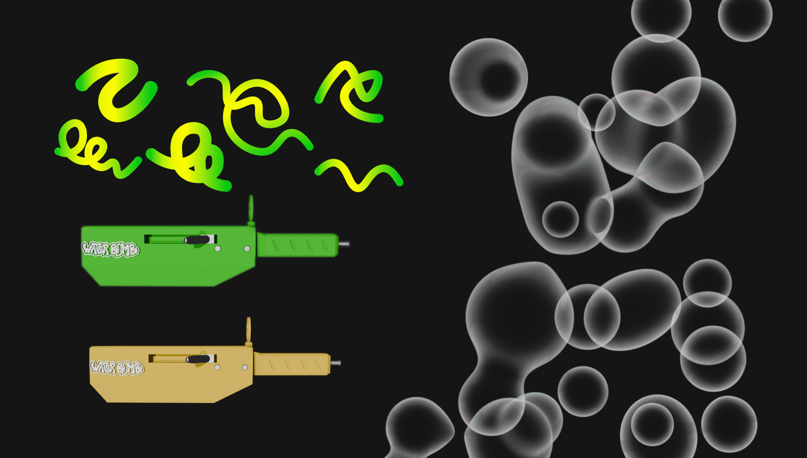
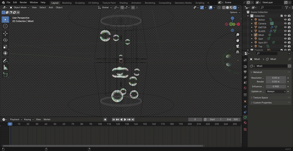
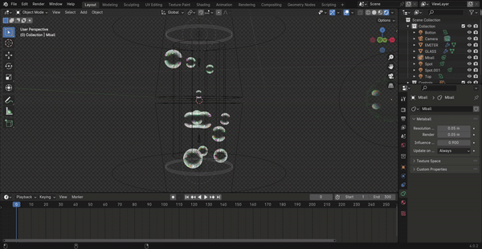

WaterBomb - AR Poster
This was my first experience with AR technology, mixing 2D and 3D objects. The briefing was to create a poster for a festival and we chose the WaterBomb festival, which takes place in different cities, the main one being Seoul. Every year their visual identity changes and we felt the need to research these different identities to come up with one that made sense.
Group Project: Daniela Teodoro | Carina Serra | Frederica Sonso
Methodology: Event Research | Visual Identity | 3D Objects | AR Implementation
Poster


Main Challenges
& Solutions
3D Animations
- Due to the beta version of Abobe's Aero and its limitations, we weren't able to include our first 3D animation of water.
- The second problem we encountered was working with opacities in Adobe Aero.
Solutions
- We made 2 final versions
- The first with our first 3D animated water, converted to a 2D GIF.
- The second, where we figured out how to work with opacity in Adobe Aero.
Graphic Elements
3D Elements
 
